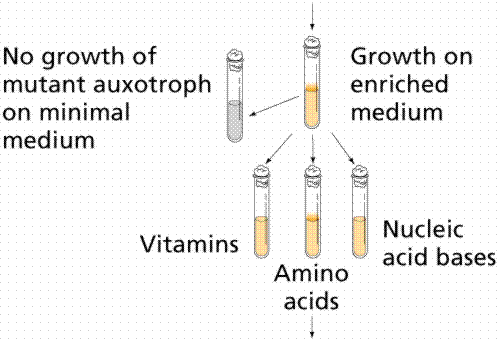
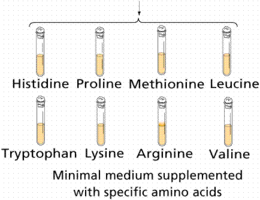
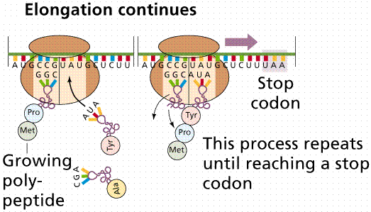

One-gene-one-protein | The structure of hemoglobin | Viruses contain DNA
RNA links the information in DNA to the sequence of amino acids in protein
Transcription: making an RNA copy of a DNA sequence | The Genetic Code
Protein Synthesis | Mutations redefined | Links
During the 1930s, despite great advances, geneticists had several frustrating questions yet to answer:
What exactly are genes?
How do they work?
What produces the unique phenotype associated with a specific allele?
Answers from physics, chemistry, and the study of infectious disease gave rise to the field of molecular biology. Biochemical reactions are controlled by enzymes, and often are organized into chains of reactions known as metabolic pathways. Loss of activity in a single enzyme can inactivate an entire pathway.
Archibald Garrod, in 1902, first proposed the relationship through his study of alkaptonuria and its association with large quantities "alkapton". He reasoned unaffected individuals metabolized "alkapton" (now called homogentistic acid) to other products so it would not buildup in the urine. Garrod suspected a blockage of the pathway to break this chemical down, and proposed that condition as "an inborn error of metabolism". He also discovered alkaptonuria was inherited as a recessive Mendelian trait.
George Beadle and Edward Tatum during the late 1930s and early 1940s established the connection Garrod suspected between genes and metabolism. They used X rays to cause mutations in strains of the mold Neurospora. These mutations affected a single genes and single enzymes in specific metabolic pathways. Beadle and Tatum proposed the "one gene one enzyme hypothesis" for which they won the Nobel Prize in 1958.
Since the chemical reactions occurring in the body are mediated by enzymes, and since enzymes are proteins and thus heritable traits, there must be a relationship between the gene and proteins. George Beadle, during the 1940s, proposed that mutant eye colors in Drosophila was caused by a change in one protein in a biosynthetic pathway.
In 1941 Beadle and coworker Edward L. Tatum decided to examine step by step the chemical reactions in a pathway. They used Neurospora crassa as an experimental organism. It had a short life-cycle and was easily grown. Since it is haploid for much of its life cycle, mutations would be immediately expressed. The meiotic products could be easily inspected. Chromosome mapping studies on the organism facilitated their work. Neurospora can be grown on a minimal medium, and it's nutrition could be studied by its ability to metabolize sugars and other chemicals the scientist could add or delete from the mixture of the medium. It was able to synthesize all of the amino acids and other chemicals needed for it to grow, thus mutants in synthetic pathways would easily show up. X-rays induced mutations in Neurospora, and the mutated spores were placed on growth media enriched with all essential amino acids. Crossing the mutated fungi with non-mutated forms produced spores which were then grown on media supplying only one of the 20 essential amino acids. If a spore lacked the ability to synthesize a particular amino acid, such as Pro (proline), it would only grow if the Proline was in the growth medium. Biosynthesis of amino acids (the building blocks of proteins) is a complex process with many chemical reactions mediated by enzymes, which if mutated would shut down the pathway, resulting in no-growth. Beadle and Tatum proposed the "one gene one enzyme" theory. One gene codes for the production of one protein. "One gene one enzyme" has since been modified to "one gene one polypeptide" since many proteins (such as hemoglobin) are made of more than one polypeptide.


The Beadle and Tatum experiment that suggested the one gene one enzyme hypothesis. Images from Purves et al., Life: The Science of Biology, 4th Edition, by Sinauer Associates (www.sinauer.com) and WH Freeman (www.whfreeman.com), used with permission.
Linus Pauling used electrophoresis to separate hemoglobin molecules. Sickle-cell anemia (h) is a recessive allele in which a defective hemoglobin is made, ultimately causing pain and death to those individuals homozygous recessive for the trait. Pauling reasoned that if Beadle and Tatum were correct, there should be a slight (but detectable) difference between the structure of a normal (HH) and sickle cell (hh) hemoglobin due to genetic differences. Heterozygotes (Hh, also sampled by Pauling) make both normal and "sickle cell" hemoglobins. Later, Vernon Ingram discovered that the normal and sickle-cell hemoglobins differ by only 1 (out of a total of 300) amino acids.
The coats of viruses act as antigens, initiating an antigen-specific antibody response. Remember that vaccines work by either prompting the immune system to make antibodies or by supplying antibodies. If a virus (or anything else for that matter) mutates its antigens, the immune system is forever playing catch-up.
Ribonucleic acid (RNA) was discovered after DNA. DNA, with exceptions in chloroplasts and mitochondria, is restricted to the nucleus (in eukaryotes, the nucleoid region in prokaryotes). RNA occurs in the nucleus as well as in the cytoplasm (also remember that it occurs as part of the ribosomes that line the rough endoplasmic reticulum).
Scientists for some time had suspected such a link between DNA and proteins. Cells of developing embryos contain high levels of RNA. Rapidly growing E. coli has half its mass as ribosomes. Ribosomes are 2/3 RNA (a type of RNA known as ribosomal RNA or rRNA) and 1/3 protein. RNA is synthesized from viral DNA in an infected cell before protein synthesis begins. Some viruses, for example Tobacco Mosaic Virus (TMV) have RNA in place of DNA. If RNA extracted from a virus was injected into a host cell the cell began to make new viruses. Clearly RNA was involved in protein synthesis.
Crick's central dogma. Information flow (with the exception of reverse transcription) is from DNA to RNA via the process of transcription, and thence to protein via translation. Transcription is the making of an RNA molecule off a DNA template. Translation is the construction of an amino acid sequence (polypeptide) from an RNA molecule. Although originally called dogma, this idea has been tested repeatedly with almost no exceptions to the rule being found (save retroviruses).
The central dogma. Image from Purves et al., Life: The Science of Biology, 4th Edition, by Sinauer Associates (www.sinauer.com) and WH Freeman (www.whfreeman.com), used with permission.
The blue-background graphics throughout this chapter are from the University of Illinois' DNA and Protein Synthesis site.
Messenger RNA (mRNA) is the blueprint for construction of a protein. Ribosomal RNA (rRNA) is the construction site where the protein is made. Transfer RNA (tRNA) is the truck delivering the proper amino acid to the site at the right time.
RNA has ribose sugar instead of deoxyribose sugar. The base uracil (U) replaces thymine (T) in RNA. Most RNA is single stranded, although tRNA will form a "cloverleaf" structure due to complementary base pairing.
RNA polymerase opens the part of the DNA to be transcribed. Only one strand of DNA (the template strand) is transcribed. RNA nucleotides are available in the region of the chromatin (this process only occurs during Interphase) and are linked together similar to the DNA process.
The code consists of at least three bases, according to astronomer George Gamow. To code for the 20 essential amino acids a genetic code must consist of at least a 3-base set (triplet) of the 4 bases. If one considers the possibilities of arranging four things 3 at a time (4X4X4), we get 64 possible code words, or codons (a 3-base sequence on the mRNA that codes for either a specific amino acid or a control word).
The genetic code was broken by Marshall Nirenberg and Heinrich Matthaei, a decade after Watson and Crick's work. Nirenberg discovered that RNA, regardless of its source organism, could initiate protein synthesis when combined with contents of broken E. coli cells. By adding poly-U to each of 20 test-tubes (each tube having a different "tagged" amino acid) Nirenberg and Matthaei were able to determine that the codon UUU (the only one in poly-U) coded for the amino acid phenylalanine.
Steps in breaking the genetic code: the deciphering of a poly-U mRNA. Image from Purves et al., Life: The Science of Biology, 4th Edition, by Sinauer Associates (www.sinauer.com) and WH Freeman (www.whfreeman.com), used with permission.
Likewise, an artificial mRNA consisting of alternating A and C bases would code for alternating amino acids histidine and threonine. Gradually, a complete listing of the genetic code codons was developed.
Deciphering the code: poly CA. Image from Purves et al., Life: The Science of Biology, 4th Edition, by Sinauer Associates (www.sinauer.com) and WH Freeman (www.whfreeman.com), used with permission.
The genetic code consists of 61 amino-acid coding codons and three termination codons, which stop the process of translation. The genetic code is thus redundant (degenerate in the sense of having multiple states amounting to the same thing), with, for example, glycine coded for by GGU, GGC, GGA, and GGG codons. If a codon is mutated, say from GGU to CGU, is the same amino acid specified?
The genetic code. Image from Purves et al., Life: The Science of Biology, 4th Edition, by Sinauer Associates (www.sinauer.com) and WH Freeman (www.whfreeman.com), used with permission.
Prokaryotic gene regulation differs from eukaryotic regulation, but since prokaryotes are much easier to work with, we focus on prokaryotes at this point. Promoters are sequences of DNA that are the start signals for the transcription of mRNA. Terminators are the stop signals. mRNA molecules are long (500- 10,000 nucleotides).
Ribosomes are the organelle (in all cells) where proteins are synthesized. They consist of two-thirds rRNA and one-third protein. Ribosomes consist of a small (in E. coli , 30S) and larger (50S) subunits. The length of rRNA differs in each. The 30S unit has 16S rRNA and 21 different proteins. The 50S subunit consists of 5S and 23S rRNA and 34 different proteins. The smaller subunit has a binding site for the mRNA. The larger subunit has two binding sites for tRNA.
Subunits of a ribosome. Image from Purves et al., Life: The Science of Biology, 4th Edition, by Sinauer Associates (www.sinauer.com) and WH Freeman (www.whfreeman.com), used with permission.
Transfer RNA (tRNA) is basically cloverleaf-shaped. tRNA carries the proper amino acid to the ribosome when the codons call for them. At the top of the large loop are three bases, the anticodon, which is the complement of the codon. There are 61 different tRNAs, each having a different binding site for the amino acid and a different anticodon. For the codon UUU, the complementary anticodon is AAA. Amino acid linkage to the proper tRNA is controlled by the aminoacyl-tRNA synthetases. Energy for binding the amino acid to tRNA comes from ATP conversion to adenosine monophosphate (AMP).
Two models of tRNA. Image from Purves et al., Life: The Science of Biology, 4th Edition, by Sinauer Associates (www.sinauer.com) and WH Freeman (www.whfreeman.com), used with permission.
Translation is the process of converting the mRNA codon sequences into an amino acid sequence. The initiator codon (AUG) codes for the amino acid N-formylmethionine (f-Met). No transcription occurs without the AUG codon. f-Met is always the first amino acid in a polypeptide chain, although frequently it is removed after translation. The intitator tRNA/mRNA/small ribosomal unit is called the initiation complex. The larger subunit attaches to the initiation complex. After the initiation phase the message gets longer during the elongation phase.

Translation. Image from Purves et al., Life: The Science of Biology, 4th Edition, by Sinauer Associates (www.sinauer.com) and WH Freeman (www.whfreeman.com), used with permission.
New tRNAs bring their amino acids to the open binding site on the ribosome/mRNA complex, forming a peptide bond between the amino acids. The complex then shifts along the mRNA to the next triplet, opening the A site. The new tRNA enters at the A site. When the codon in the A site is a termination codon, a releasing factor binds to the site, stopping translation and releasing the ribosomal complex and mRNA.
Termination. Image from Purves et al., Life: The Science of Biology, 4th Edition, by Sinauer Associates (www.sinauer.com) and WH Freeman (www.whfreeman.com), used with permission.
Often many ribosomes will read the same message, a structure known as a polysome forms. In this way a cell may rapidly make many proteins.
Many ribosomes translating the same message, a polysome. Image from Purves et al., Life: The Science of Biology, 4th Edition, by Sinauer Associates (www.sinauer.com) and WH Freeman (www.whfreeman.com), used with permission.
The illustration below is from Genentech's Access Excellence site, which may be reeached by clicking here. The drawing is available at http://www.gene.com/ae/AB/GG/protein_synthesis.html
We earlier defined mutations as any change in the DNA. We now can refine that definition: a mutation is a change in the DNA base sequence that results in a change of amino acid(s) in the polypeptide coded for by that gene. Alleles are alternate sequences of DNA bases (genes), and thus at the molecular level the products of alleles differ (often by only a single amino acid, which can have a ripple effect on an organism by changing ). Addition, deletion, or addition of nucleotides can alter the polypeptide. Point mutations are the result of the substitution of a single base. Frame-shift mutations occur when the reading frame of the gene is shifted by addition or deletion of one or more bases. With the exception of mitochondria, all organisms use the same genetic code. Powerful evidence for the common ancestry of all living things.
Email: mj.farabee@emcmail.maricopa.edu
Last modified:
The URL of this page is: